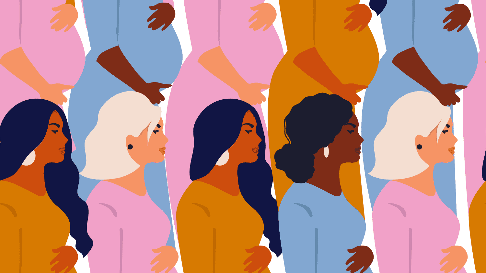

KEYWORDS: Maternal, mortality, low-income countries, Nigeria, Healthcare systems, Review, Literature, Death.
According to WHO
Nigeria is one of the top six countries where maternal mortality rate remains a problem. Despite different strategies and progression towards maternal mortality, the death rate continues to be an issue (Hogan et al, 2016). The leading cause of maternal mortality are sepsis, eclampsia, haemorrhage, hypertensive disease and complications from unsafe abortion (Abass, 2008). There are also different factors that contribute to this issue. This can be due to their socioeconomic status, education, cultural beliefs, lack of health care facilities, lack of staff etc. The well-being of women helps determine the health of many generations and helps tackle different public health challenges and how to manage the healthcare system. There has been different strategies and frameworks launched by public health interventions to focus on improving women’s health worldwide especially in low- and middle-income countries (United Nations 2016). Additionally, these interventions do not only focus on the diseases affecting women but focuses on general access to proper diagnostic services, imaging and adequate systems or services.
Theoretical Framework
<This research will focus on the functionalist theory. This theory contends that individual's behaviour within the society can be shaped through the process of socialisation (Thompson, 2016). In relation to this research paper, it basically suggests that, for a woman to have a successful maternal journey, a conscientious effort must be made to coordinate in order to achieve all important stages of pregnancy from family planning to having a safe postpartum period. In addition to this, it also explains that, in order to achieve this positive outcome, a good maternal healthcare system must be established.
In the process of conducting this research paper, alongside the aims and objectives, what was left was the involvement that is required in order to establish a proper research instruction. This review retained information from published articles between 2000 and 2021 which made use of both qualitative and quantitative method for collection of data and analysis. Studies which also included the objectives of the experiences of women facing difficulties in maternal health in Nigeria. Studies which only focused on: hypothetical analysis and situations, articles containing women seeking for fertility issues, articles in developed countries were excluded.
This review also focuses on women aged 18-50. It was important to focus on articles concerning women in Nigeria and other low-income countries as opposed to already developed countries due to high mortality rate and the lack of resources and treatment women receive during maternal visits. Furthermore, studies which subjects involve non pregnant women; and studies in which its analysis did not relate to maternal mortality were excluded.
The process of selecting research terms allows the scope of the research discovery to be broadened. Therefore, it was very important to select the appropriate database relevant for this research paper. Key sources and various healthcare database such as PubMed, the National Library of Medicine (NLM), National Centre for Biotechnology Information (NCBI) and information’s from the World Health Organisation (WHO) were used to support this study. These resources helped in the process of gathering information on maternal mortality in Nigeria due to their rich health related sources.
Furthermore, Other databases such as Google Scholar and Medline were also included to gather articles and convey more information on maternal mortality. In addition to this, another useful method to consider when conducting a research question is Boolean words such as AND, OR and NOT which were used to retrieve relevant search results from different data as mentioned above. According to Jacquette (2008), Boolean operators are used to put different works together in a search string in order to gain proper results. For example, to gain more information on maternal mortality and morbidity in Nigeria, the use of Boolean search strings will include “maternal mortality AND morbidity in Nigeria” so that all results will include both criteria in this area of study. Furthermore, keywords such as maternal mortality, postpartum, maternal health, pregnant women, prenatal and healthcare systems were used in order to detect relevant information to support this research. Other research and articles regarding the different types of care available to women in Nigeria were also analysed and incorporated in this paper.
Moreover, in order to retain a wide range of articles on this topic, it was important to work with a variation of search terms such as pregnancy, maternal, mortality, morbidity based in Nigeria and other low-income countries. At least 10 articles were chosen for this literature review. All articles chosen were based on both qualitative and quantitative research and published between 1990 and 2021. These studies were carried out in different places such as hospitals, universities, care settings and other public areas in Nigeria.Since maternal mortality is a sensitive topic about women's health and how they can potentially lose their lives if protective measures are not taken. It is important to consider ethical challenges when carrying out literature reviews. All articles used for this literature review included ethical approvals before carrying out data. Each of them had obtained informed consent from all participants. Some participants were given the right to participate voluntarily and to withdraw without any penalty. However, most articles included findings that were a bit sensitive, which was an exclusion for this review. For instance, some articles had information about women who had gone through rape and women who had lost their pregnancy due to domestic violence. As this can be a sensitive issue for most women, it was necessary to exclude this information. For the purpose of privacy and confidentiality, data gathered were kept anonymous.
While conducting this review, there were various themes that emerged from different articles. The themes retained from these articles referred to the underlying issues and determinant factors contributing to maternal mortality in Nigeria. This includes sociocultural factors, the practice of unsafe abortion, women’s education status and socioeconomic factors. These themes gathered from these articles also includes women’s experiences in maternal mortality. There’s a strong link between the context of this review and the experience women face in maternal health, and the themes used in this review overlaps with shared impact at both ends. These themes will be explained below giving examples from all articles used for this literature review.
Several studies highlighted the sociocultural factors influencing maternal mortality in Nigeria. In most developing countries, the utilization of health systems and maternal services are influenced by cultural factors. In Nigeria and other part of sub-Saharan societies, cultural practices have been known to be one of the factors contributing to maternal mortality (Salima, 2012). Sociocultural factors can influence women’s decision on whether to reach out for care in healthcare facilities. In most African cultures, the knowledge to seek for adequate care mostly lies on their cultural beliefs and views. Some individuals tend to seek care from traditional healers and churches as it is their personal belief that, diseases can be healed spiritually rather than seeking for medical care (Campbell et al, 2009). For example, some cultures believe that consuming eggs and snails which supplies nutrients to a mother and their baby during pregnancy is forbidden. This can result in a high iron deficiency leading to severe anaemia and can consequently lead to death if not treated considering that most women lose excess blood during delivery.
A study conducted by Nwokocha (2003) among the people of Ibani, Rivers state discovered that, causes of maternal mortality are on the increase and pregnancy outcomes (whether positive or negative) are being affected due to sociocultural factors. A qualitative study carried out by Marabele et al (2020) explained that diseases and other conditions are sometimes viewed differently due to cultural beliefs. In this study several participants between the ages of 30-45 gave their opinion on how cultural factors has contributed to their maternal health. Most participants denied the use of healthcare facilities due to their cultural beliefs whereas others stated that it was due to their socioeconomic status. For instance, people from the North of Oyo state have customs that seemingly places high values on traditional practitioner in charge of pre and post pregnancy almost in every community. Such that when pregnant women who see blood spots during their 2nd trimester is made to believe that their enemies want to take the child/children away and use him/her against the mother. Therefore, instead of seeking medical attention or advice from a qualified doctor they will rather decline. Hence, most end up bleeding excessively before being rushed to hospital.
Consequentially, losing babies at 22weeks could have been avoided if seen by the obstetrician or gynaecologist few days earlier or had 65-75% of the maternal health information. According to Cometto (2012), in most Islamic homes, women needed permission from their spouses to live their homes to seek medical treatment. In addition to this, others had no choice than to seek for female doctors to attend to their pregnancy treatment. Furthermore, most women find it to access health facilities due to poor road networks. Due to the poor nature of some of these roads, pregnant women are often carried at the backs of people to travel long distance to healthcare facilities. In addition to this, due to these poor road networks, it is difficult for transport services such as ambulances to help these women access health facilities. As a result of this, most women have no choice than to give birth at home traditional herbalist and other untrained people such as family, friends etc. The delays can cause complications and lead to possible death.The linkages between unsafe abortion and maternal mortality fell across various studies. The practice of unsafe abortion has been one of the common causes of maternal mortality in Nigeria. Abortion plays a huge role in the reproductive health of women in Nigeria. Unsafe abortion often leads to maternal complications such as sepsis, haemorrhage and trauma. This has been a huge public health issue in most developing countries (Frank et al, 2017). According to the Criminal Law of Lagos State (2011), abortion itself is restricted in Nigeria, hence, the need to practise unsafe abortion to terminate unwanted pregnancy has become a necessity unless done to save a mother’s life.
A recent study carried out by Byrne et al (2021) consisted of 1144 women in several Nigerian state. Most women who participated in this study reported that their abortion experience was either carried out by a friend or unskilled provider due to its illegalisation. Moreover, another study carried out by Saidu et al (200) explained that participants who were asked about their views on unsafe abortion had poor knowledge of the process of abortion though many knew women who had died and had complications due to unsafe abortion. In addition to this, policymakers who gave their opinion on this study suggested that abortion should remain illegal in Nigeria due to their cultural beliefs whereas others supported that it should be legal in cases of rape and incest and women should have the choice to decide what they want to do with their pregnancy. Other participants recommended different strategies to help reduce maternal mortality in Nigeria. This included the use of contraceptives, providing women with sexual education, supports groups to empower women, improving the healthcare system in Nigeria and providing free pregnancy care to all women.
The education level of women is thought to be important for treating and preventing poor health outcomes (McNichol, 2003). In most cases, women who are educated are said to develop better autonomy to act on health knowledge and skills, control women’s fertility and help improve maternal health in Nigeria. Women in African societies are known to be the ones to keep the household and sometimes may not consider taking care of themselves as a priority. Educated women are often known to be an investment for the family (Anugwom, 2009). A study carried out by Babalola (2009) found the Significant association between education and the use of maternal services. --> The concept if maternal education and its effects of women in most developing countries has been an issue of discussions for researchers. According to the World Health Organisation as reported by Renket and Nutbean (2001). Education in health often represents the cognitive skills that determines the ability to gain access and to understand the use of information in ways to promote good health. a study carried out by Asogwa et al emphasised that illiteracy plays a huge role in women’s health. the study explained that most women are often unaware of how important antenatal care is about, so they tend to avoid them during pregnancy. Some participants in this study explained that when women are thought about the importance education and pregnancy, they often see it as a show-off to them.
Another theme that emerged from different studies was the level of poverty associated with maternal health in Nigeria. Poverty is one of the major causes of maternal mortality Nigeria. Poverty can be defined as the situation in which individuals needs necessary for survival are so limited excluding them from minimum way of life in countries in which they live in (Safra, 1998). It is usually identified as one of the major factors to human development. Most women in poverty do not receive proper medical care due to their cost of living and their inability to afford proper maternal treatment. According to the Nigerian Demographic and health survey (2015), 30 percent of women in Nigeria are known to receiving loan for treatment whiles 24 percent of these women have difficulties in accessing transportation to health facilities due to their socioeconomic status.
A study carried out by Asogwa et al (2021) explained that poverty is one of the reasons why women do not make use of maternal facilities. Participants who were involved in this study stated that most women avoid going to the hospital due to their financial status. Most women perceive the hospital as a place for people with higher income so they would rather use local herbs or visit unskilled providers. According to Akinola, who is the chair of Gynaecology in Nigeria suggests that 20% of women in Nigeria give birth by themselves, while other 25% only refer to traditional attendants, most of whom cannot handle birth complications but fail to refer women to trained personnel (Wakabi, 2013). As a result of this, about 145 women lose their lives during and after childbirth. Furthermore, Nkegbe et al (2017) investigated the link between poverty and malaria and its influence on maternal mortality. Malaria remains a public health burden in Nigeria, causing about 200-500 million illnesses and an estimate of 1-2 million death rate annually (Kaiser, 2013). This is a preventable illness yet one of the common serious diseases worldwide. According to the World Health Organisation (2017), malaria is one of the major causes of maternal mortality in Nigeria. This leads to anaemia, low birth weight after birth and preterm birth. Studies have shown that socioeconomic factors play a major role in malaria. Akpa (2019) found that, pregnant women who had partners with better education were more likely to receive better treatment to fight malaria as compared to other women.
As explained above, the functionalist theory was chosen for this literature review as it determines how the social world must work together to provide a healthy environment. In many parts of the world, women are maltreated during childbirth (Bohren et al, 2015). This can be due to their socioeconomic status, education, their role in society, class, gender etc. The health of most women and their children is disadvantaged through different social inequalities.
Typically, the main assumption of the functionalist theory is based on the concept that, society can be explained as whole (Okafor, 2015). A prominent theorist like Durkheim, Herbert Spencer, Wilbert Moore explained that in order to understand the social phenomena, it is important to consider the ‘needs’ of the social organism. So, for a certain population to survive, social institutions must work together to promote a healthy stability and solidarity within the society. According to these functionalists, society is a complex system made up of interconnected structures. However, this demonstrate that, for societies to adapt and function properly there must be quality and affordable healthcare systems (Okafor et al, 2015).
Furthermore, Talcott Parsons who was specialised in the sociological way of thinking argued that any social system consists of four basic functional requirements: goal attainment, adaptation, latency and integration (Trueman, 2015). He explained that for the society to survive properly, these four prerequisites should be seen as a problem and therefore must be reviewed. These four prerequisites are used to explain cultural and social imperatives.
Based on the theory explained above, it is possible to understand that maternal mortality and maternal healthcare can be controlled in Nigeria. Maternal mortality and other pregnancy complications in women are due to different aspects of cultural, social and economic systems. Additionally, the reproductive period of a woman can be influenced by both sociocultural and biological factors. For example, the stages of pregnancy must require an effective plan and adequate care in order to avoid complications during pregnancy and after birth as any little mistake can affect the outcome of the pregnancy. In reference to the functionalist’s view, this can either affect the life of the mother, the child or both. To assist this theory, an article conducted by McCourt (2014) explained that social theory helps to analyse the social determinants of health and the ways in which women’s socioeconomic status and their access to education and power can play a major role in their health status and their wellbeing.
According to Akokuwebe (2016), the healthcare system in Nigeria has been faced with a disturbing maternal mortality and morbidity during pregnancy and after. The healthcare sector in Nigeria has been haunted by the type of quality services people receive, including the shortage of drugs, inadequate infrastructures, unfriendly staff and poor attitudes towards patients (Hodges, 2001). In some hospitals, there are shortage of equipment and lack of supplies such as weighing scales, thermometers, waste bins, sphygmomanometers etc. Many hospitals do not have regular electricity supply due to the inability to manage a generator. Most patient are being asked to provide their own water due to the shortage of water supplies. The Nigeria government spend roughly about 80 percent of the country’s resources to provide a better healthcare system for its citizens, yet the social system fails to deliver better healthcare needs for women at a critical time of their lives. There is a need for the Nigerian government to invest more finances to support the healthcare system and to allow primary healthcare especially in the rural areas of Nigeria to be accessible and affordable to promote better healthcare.
Despite gradual improvements and approaches set to help women access adequate health resources, there has still been an ongoing difficulty in meeting the healthcare needs of women at a critical time of their lives, mostly during their adolescent and old age; from difficulties in accessing proper equipment and technologies for clear diagnoses, to the lack of medication and reliable treatment, the ongoing issues of healthcare in Nigeria has been either stagnant or worsen. Suggesting that the efforts made to help these issues have either been improperly implemented (Thomas 2022).
This review was conducted to identify some of the main causes of maternal mortality in Nigeria. The introduction and other findings of this literature review confirms the different causes associated with maternal health in Nigeria. As explained previously, maternal mortality does not only consist of childbirth but rather prenatal and postpartum care. These components are essential for making sure that mothers and their children are safe. Furthermore, one of the main factors that was found through studies was socioeconomic status of women in Nigeria. According to Lanre (2008), it is proven that a lot of women do not receive proper medical care due to the lack of services they receive in their residency and their inability to afford healthcare services because the prices may be too high. As a result of this, a lot of women do not make use of healthcare services due to the level of care provided or they believe that high quality care is not being delivered to meet their needs.
Furthermore, other findings revealed the practice of unsafe abortions as one of the contributing factors of maternal mortality in Nigeria. Women undergo dangerous unsafe abortion performed by unskilled providers putting women at risk due to abortion being illegal in Nigeria. Moreover, eight studies used to conduct this review showed that unsafe abortion contributes to at least 20% of maternal mortality with an assisted complications such as anaemia, sepsis, ruptured uterus and in most cases, complications affecting the reproductive system.
In theory, all ten studies used for this review reported poverty as one of the main causes of maternal mortality. It was found that, the Nigerian economy has one of the largest productions of oil and gas and supplies to other countries (BBC, 2002). Nigeria has the potential to build a wealthy economy and to provide proper healthcare systems for women in the country. However, the widespread of poverty has been a problem despite its natural resources to a point where Nigeria has been placed among one of the twenty poorest countries in the world (BBC, 2002). Regardless of its wealth in oil, earning an estimate of 280 billion U.S dollars, Nigeria has one of the highest maternal mortalities globally. The healthcare system in Nigerian has been in a dismal state past few years due to their poor socioeconomic state and their crises of leadership. The Universal Rights of Childbearing Women Charter declares that every woman has their right to be respected and dignified when it comes to their sexual and reproductive health including childbirth (White Ribbon Alliance, 2013). Poor maternity care profoundly influences the health and future of women as well as their child and generations to come. In cases where women have difficulties in societal acceptance and discrimination based on their socioeconomic status, they are more likely to be treated poorly in health facilities.
Furthermore, the Nigerian government hopes to provide measures to improve women’s healthcare and to reduce the countries burden in maternal mortality rate (Wakabi, 2013). Nigerian officials have made considerable effort to help reduce the burden of maternal mortality. For instance, these efforts include free healthcare system for women especially those in rural areas, deploying midwives to areas of need, offering women with free contraceptives etc (Chukwu, 2011). According to Nigerian Healthcare Minister Onyebuchi Chukwu, there has been efforts made to jumpstart different campaigns to improve the healthcare systems in Nigeria. For instance, a health insurance scheme launched to help women access better healthcare treatment. This health insurance scheme mostly targets population in rural areas to help those struggling to afford healthcare treatment (Wakabi, 2013).
The findings of this review and the outlined themes brings clarity on the determinant factors women face during and after pregnancy. Maternal mortality in Nigeria remains a public health problem and requires a substantial improvement. This review drew on relevant theories that helps to understand the reason for these factors and human behaviour towards maternal mortality. Unfortunately, women in Nigeria are more likely to suffer from pregnancy related problems and complications as compared to other women in developed countries due to the ongoing death rate in maternal mortality. It is very important to consider women’s health outcomes for them to feel protected and safe when seeking for medical attention. In order to improve women’s quality of health and to help reduce maternal mortality, the barriers to accessing proper healthcare services must be tackled at all levels to enable quality healthcare systems and treatments. It is also important to understand and address certain factors such as socioeconomic, sociocultural and other health related issues that make it difficult for women to seek maternal care at a very critical time of their life.
Furthermore, the Global Strategy for Women and Children’s Health is among one of the strategies that was lunched by the UN Secretary General. This was established between the years 2010-2030 to significantly draw the public’s attention and contributions towards improving maternal mortality and women’s health in general (Mariani et al 2017). This strategy provides women, adolescents and children with proper safeguarding for transformative change and helps women attain their human rights, even in the most difficult time of their life. It also provides women with good quality services, stronger healthcare systems, skilled and equipped healthcare workers etc.
A limitation of this study was the different articles and literatures included to get a clear understanding of women’s experiences in maternal mortality. Although, different studies were found between late 1980s to 1990s. It was important to focus on studies published from early 2000s to date. Furthermore, the exclusion of medical studies that were related to maternal mortality containing rich information of women’s experience which could have been useful, is considered as a limitation for this study. Despite these limitations, the findings and articles used for this review gives an understanding of why maternal mortality continue to be problem and the different factors that contribute to impacts women’s health in Nigeria.
Upon commencing this review, I was a bit nervous considering how big this assignment was going to be. I didn’t know how to begin this review. I was a bit limited to resources and information due to my participation in class and online lectures. I learn better in class than online, so that was a bit challenging for me. However, I’m very too determined so I decided to go over and over on the pre-recorded lectures to better understand and ensure that I am on track. At first, I began this project by understanding what I needed to do and what to include after picking this topic. I made sure to read, understand and revise on the theories and different frameworks involved on this topic.
Furthermore, I thought the biggest hurdle in carrying out this big project was having to put together ideas, search for relevant articles and drafting of the review; however, the most difficult part I felt was a bit of a hustle was to incorporate the research and relevant articles into this review. I made use of the library to gain more database and ideas for this paper. I also made sure to keep in contact with colleagues and most importantly the module leader to make sure I am on track. I believe my biggest accomplishment was completing this whole literature review. Having to look back the time invested and carrying out wider reading to achieve a greater outcome. This review mainly focuses on the health of women in Nigeria. I spent a lot of time making sure that I understand the healthcare systems in Nigeria and the many articles written on maternal mortality.
Overall, I personally believe that I did very well on this literature review. It is one of the best papers I have had to carry out. I have learnt a lot from it; especially what women go through in other parts of the world and the extra measures they go through in order to have a healthy living that has been taken away from them. Moreover, I had a very limited time due to personal circumstances, but I made sure to plan beforehand. I personally feel like my vocabulary and structuring has improved tremendously. I have gained the knowledge on how to cite and reference correctly. At the end, I was pleasantly surprised about the outcome of this paper. I enjoyed and learned a lot from it.
| Article | Theories | Aim of the study | Population and sample | Research tools used in the study | Main findings and conclusions | Strengths and limitations of the research | Main codes and categories | Theme |
|---|---|---|---|---|---|---|---|---|
| Author Date and Source using Harvard referencing system | Any theoretical Foundations? | Aims and Objectives | Setting? Location? Sample characteristics? Size of sample? Method of recruitment | Quantitative; Qualitative; Mixed Methods | Summary of main findings and conclusions. | Any critical comments about the theoretical points? Research methods? Results? Findings? Any research implications for your change in practice? | ||
| Olonade, O., Olawande, T.I., Alabi, O.J. and Imhonopi, D. (2019b). Maternal Mortality and Maternal Health Care in Nigeria: Implications for Socio-Economic Development. Open Access Macedonian Journal of Medical Sciences, [online] 7(5), pp.849–855. doi:10.3889/oamjms.2019.041 | Yes | The cogent issues affecting maternal mortality in Nigeria | Existing data from WHO, UNICEF, NHDS Study targeted maternal mortality in Nigeria. | Both qualitative and quantitative method | Maternal mortality continues to be a major problem in Nigeria. this review carries research on the socioeconomic factors leading to maternal mortality. It is therefore important for the government to improve and eradicate poverty to ensure better healthcare systems. | The functionalist theory was used for this study. | The high level of maternal death affects women's ability to fully participate in labour force to enhance proper maternal care development | The psychological effect of maternal mortality |
| Okereke, E., Aradeon, S., Akerele, A., Tanko, M., Yisa, I. and Obonyo, B. (2013b). Knowledge of safe motherhood among women in rural communities in northern Nigeria: implications for maternal mortality reduction. Reproductive Health, 10(1). doi:10.1186/1742-4755-10-57. | None | Reducing maternal mortality in rural areas in Nigeria | Data from two states in Nigeria, Kano and Kaduna states. 540 women were randomly interviewed,90% respondents from both states | Cross sectional study. | This study outlines some important findings from surveys and lessons that will support the implementation of maternal health and safe motherhood across northern Nigeria. | No theoretical findings. The implication of this study focuses on the need for mothers to prepare for a safe pregnancy plan for improving their maternal health. The study results find that having a better socioeconomic status increases the chances of knowing the negative outcomes of maternal health. | Women were a bit scared due to the danger and signs being displayed on television and their neighbours | Emotional effect. |
| Meh, C., Thind, A., Ryan, B. and Terry, A. (2019b). Levels and determinants of maternal mortality in northern and southern Nigeria. BMC Pregnancy and Childbirth, 19(1). doi:10.1186/s12884-019-2471-8. | A theory based on the work of McCarthy and Maine. | To access the difference in the levels of determinants of maternal mortality in women age 15-49 | This study focused in women who had been pregnant and at least given birth to one child. Study focused on women age 15-49. Study carried out in the northern and southern part of Nigeria. | Cross-sectional study | The study shows the ongoing issue of maternal mortality and reveals its determinants in the northern and southern part of Nigeria. | There was a limited information obtained from the deceased siblings. | women who gave information on deceased siblings found it difficult to participate. | Emotional effect of maternal mortality |
| Lanre-Abass, B.A. (2008b). Poverty and maternal mortality in Nigeria: towards a more viable ethics of modern medical practice. International Journal for Equity in Health, [online] 7(1). doi:10.1186/1475-9276-7-11. | No theoretical framework was used for this study. A common theory emerged suggesting that many human relationships involve people who are vulnerable including pregnant women | To examine poverty as a threat to human existence, particularly in women's health. It highlights the causes of maternal deaths in Nigeria by questioning the practice of medicine in this country, which falls short of the ethical principle of showing care. | The population of Nigeria | Cross-sectional study | It concluded by stressing that partiality which is a practical aspect of an ethical orientation known as care ethics, has implication for medical practice in Nigeria. | Care ethics can improve the health of the population if patients and physicians have an accurate notion of not only what it means to be human but also what it means to live a healthy lifestyle. | A physician ought not to inflict pain and suffering, loss of freedom. An individual should not deprive others from pleasures and happiness by restricting autonomy. | Physical and psychological effects |
| Sageer, R., Kongnyuy, E., Adebimpe, W.O., Omosehin, O., Ogunsola, E.A. and Sanni, B. (2019b). Causes and contributory factors of maternal mortality: evidence from maternal and perinatal death surveillance and response in Ogun state, Southwest Nigeria. BMC Pregnancy and Childbirth, [online] 19(1). doi:10.1186/s12884-019-2202-1. | Develop ing policies for reducing maternal and perinatal mortality ratios by improving the quality of prenatal and obstetric care | This study determined causes and contributory factors to maternal and perinatal mortality in Ogun state | Reviewed in health facilities in Ogun state. Population of 6,084,327. Both male and female participants | Both qualitative and quantitative | “We concluded that many of the contributory factors of maternal mortality could be avoided if preventive measures were taken and adequate care available.” | Several efforts were put in place by stakeholders in MPDSR response in Ogun State coordinated by the state primary health care board confirms plans to institutionalize the programme and response in Ogun State, even after the withdrawal of donor support | Problem in pregnancy usual starts during a woman’s second and third trimester | Emotional and psychological effect. |
| Ariyo, O., Ozodiegwu, I.D. and Doctor, H.V. (2017b). The influence of the social and cultural environment on maternal mortality in Nigeria: Evidence from the 2013 demographic and health survey. PLOS ONE, 12(12), p.e0190285. doi:10.1371/journal.pone.0190285. | The McCarthy framework of determinants of maternal mortality. | This study aimed to assess the sociocultural correlates of maternal mortality in Nigeria. | Northern part of Nigeria | Qualitative and quantitative | Efforts to reduce maternal mortality should implement tailored programs that address barriers to health-seeking behaviour influenced by cultural beliefs and attitudes, and low educational attainment. | Programmatic implications of the study findings indicate that for an ethnically diverse country such as Nigeria, one-size-fits-all programs cannot be effective in reducing maternal mortality. Therefore, effective dissemination of evidence-based interventions requires considering the contextual environment in which women reside | Religious tenets which uphold women's obedience to their partners or husbands, acceptance of strict confinement to the compound (purdah) or requirement of partner/husband’s permission to leave the confines of the house are likely to inhibit women from independently deciding to access health services or calling for timely assistance in the event of maternal complications | Emotion, psychological and domestic abuse |
| Asogwa, U.S., Jemisenia, O.J. and Asogwa, N.U. (2022b). Women’s Perceptions of the Causes of Maternal Mortality: Qualitative Evidence From Nsukka, Nigeria. SAGE Open, 12(1), p.215824402210798. doi:10.1177/21582440221079817. | The supernatural theory of causation | Nsukka, Nigeria, 18-40 years women participated in this study. Study interviewed a total of 30 women. | Qualitative | This study therefore concludes that some of these primordial and superstitious beliefs that are detrimental to maternal and child well-being are still upheld and practiced | The implication is that when individuals such as those we have studied hold such beliefs to the detriment of their health, they are predisposed to several reproductive health problems like haemorrhage and delayed delivery which could lead to maternal mortality. Therefore, finding a feasible way to reduce maternal mortality requires community-centered approach to maternal health. | Women had low self-esteem, others had fears of losing their lives due to their socioeconomic status and not being able to afford for maternal treatment | Psychological effects |